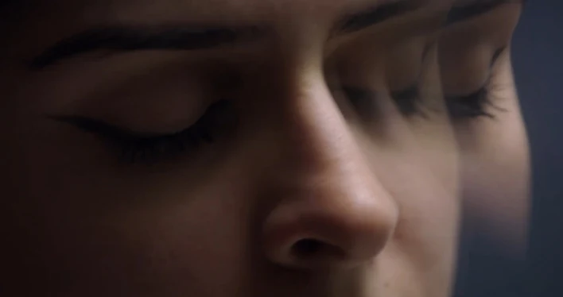
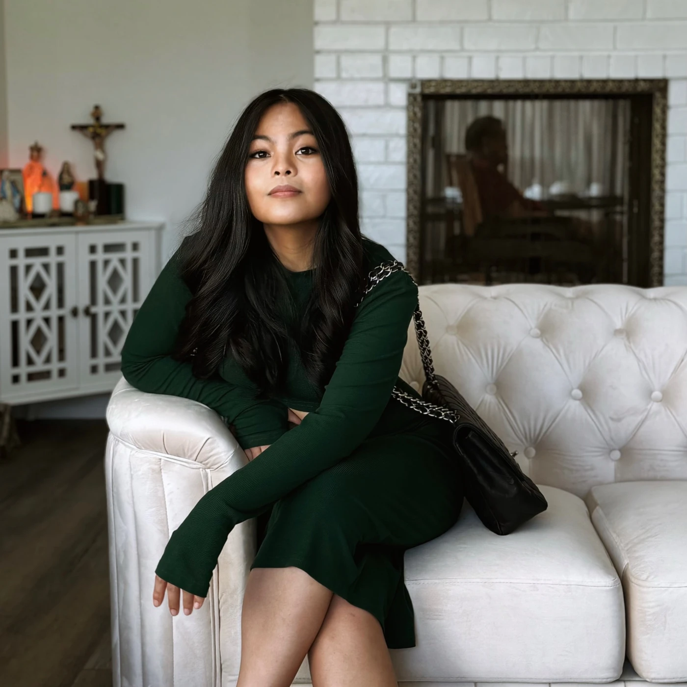

I Am Because We Are
ProducerA Black teenage artist journeys through the lives of her namesake women, finding strength in the lineage that shaped her. A USC MFA thesis film, Disney Storytellers recipient and Shore Scripts finalist.

Jemina Garcia
Producer. Writer & Director. Filmmaker.
01 / FILMOGRAPHY
02 / IN PROGRESS
A Black teenage artist journeys through the lives of her namesake women, finding strength in the lineage that shaped her. A USC MFA thesis film, Disney Storytellers recipient and Shore Scripts finalist.
A psychological short centered on Harm OCD, developed through the USC Annenberg mental-health filmmaking accelerator. Executive produced by Kristen Bell.
A Galileo-centered historical short exploring scientific conviction and the struggle to defend truth. In development, with an Unreal Engine animatic planned as a proof of concept.

JAKARTA / MANILA / LOS ANGELES03 / THE FILMMAKER
I’m Jemina Garcia, a Los Angeles filmmaker and producer working across narrative film, documentary and virtual production.
I bring creative judgment and hands-on coordination to stories from development through delivery. My work moves between directing performances, building productions, shaping an edit and finding a film’s visual language.
Born in Jakarta and raised in Manila, I grew up learning to find music in cacophony. My experience volunteering as a video journalist for Maria Ressa during the 2022 Philippine presidential election sharpened my belief in artists as defenders of truth.
I graduated from UCLA with degrees in English and Political Science, then earned my MFA in Film & TV Production at USC in May 2026. At USC, I was a James Bridges Directing Scholar and served as Production Council President, supporting the creative community around me.
Producing is how I advocate for that community: shaping a story, assembling the right people, and building the conditions that let bold work happen.
04 / HOW I WORK
Research, development, script notes and visual language. On Endgame, chess and pills became a shared vocabulary for control and addiction.
Casting, collaboration and clear communication. On Boil That Cabbage Down, I managed participants, performers and departments across a year-long production.
Budgets, schedules, safety and delivery. I connect the creative ambition to a workable plan, then support the team from preparation through post-production.
05 / EMERGING MEDIA
Unreal Engine and motion capture open new possibilities for storytelling. Flash Forward brings together my work as a producer, animator and VFX artist.